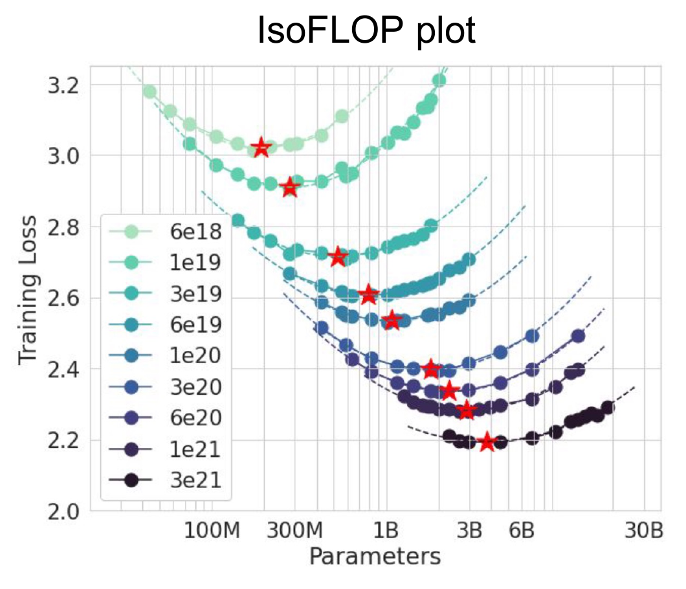
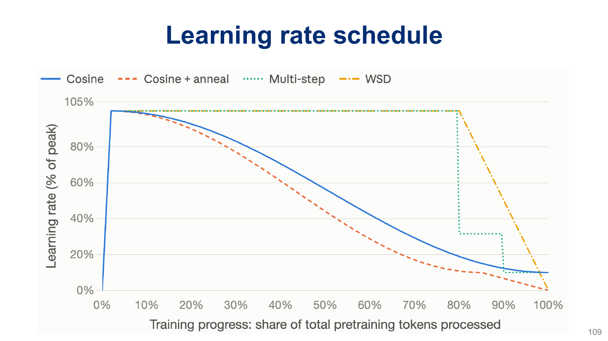

A cleaned corpus and a Transformer are the ingredients, not the training plan. We still have to decide how to spend compute, how many tokens contribute to each update, how to change the learning rate, and what evidence tells us that training is working. This handout builds a small, auditable training plan and follows those decisions into code.
- Scope
- Printed slides 94–131, from “The actual pre-training” through the final recap. These are PDF pages 92–129: printed labels 91–92 were skipped earlier in this file. All slide links below use PDF page numbers.
- Assigned papers
- None. This handout is the reading for Session 16. Linked papers provide evidence and optional further reading.
- Time
- 5 minutes for the warm-up; 50–65 minutes for §1–§5 and the practice in §6. Optional: 25–35 minutes for the CPU lab/code reading (§7) and 5–10 minutes for bonus notes (§8).
- By the end
- Compare model/token allocations at fixed compute; account for optimizer memory; distinguish AdamW decay from an L2 loss penalty; calculate effective token batches; reason about packing and repetition; diagnose training with loss and task metrics.
- Assumes
- Batching and accumulation (#7), stable training (#8), masking and cost (#12), and data preparation (#15). Here $N$ counts parameters, $D$ counts processed training-token positions, and $T$ is sequence length. These meanings are local to this handout.
Slide-to-reading map
| Printed slides | Reading |
|---|---|
| 94–102 | §1: training plan, model ladder, IsoFLOP comparisons, inference demand |
| 103–105, 107–108 | §2: optimizer state, memory, and learning rate |
| 109–114, 116 | §3: schedules, scale, weight decay, and dropout |
| 118–126 | §4: effective batches, packing, and repeated data |
| 127–130 | §5: stability, checkpoints, task likelihood, and accuracy |
| 131 | §6: synthesis and practice |
| 106, 115, 117 · Bonus | §8: optional observations; no model-name memorization |
Warm-up: what does an update count?
Two runs each take 1,000 optimizer steps. One uses 32,768 tokens per update and the other 131,072. Have they processed the same amount of training data?
Predict, then reveal
No: 32,768,000 versus 131,072,000 token presentations. Steps alone conceal a factor of four. This does not by itself tell us which run learns better or finishes sooner.
A model fits during its first forward and backward passes, but the first AdamW step runs out of memory. What new persistent tensors might have appeared?
Predict, then reveal
The first- and second-moment tensors, often initialized lazily at the first update. Also check optimizer temporaries and the actual precision implementation. Fitting weights and activations does not guarantee that a complete training step fits.
You accumulate gradients over eight sequences of length 2,048 before updating. Does any token thereby get a context window of 16,384?
Predict, then reveal
No. Accumulation combines gradient contributions, not attention contexts. Each sequence still has a window of at most 2,048 positions.
1Spend a compute budget deliberately
1.1 Parameters, processed tokens, and compute
A training plan chooses model size, processed-token budget, and optimization settings together. With a fixed compute budget, a larger model generally permits fewer training tokens. A smaller model can receive more updates or more data within that budget, but may lack the capacity needed for the task.
Compare held-out quality after spending the same compute. Equal token counts and equal optimizer-step counts do not establish equal compute. For this handout, compute budgets are supplied by the experiment’s accounting; deriving training-compute formulas and fitting scaling laws belongs to the later scaling-laws lecture.
1.2 Use small runs to measure a trend
An IsoFLOP profile holds training compute fixed and measures held-out loss at several model sizes. Adjust the token budget for every size. Repeat at several compute budgets, then study how the best measured allocation moves. A fitted curve can interpolate between runs, but an estimated optimum is uncertain when runs are noisy or cover only one side of the minimum.

Build a model ladder: several sizes with a controlled data/evaluation setup. Tune enough at each scale that an accidentally bad learning rate does not masquerade as a scaling law. Keep a final held-out evaluation separate from the validation used to select settings. Extrapolation from this ladder is a prediction to check, not a guarantee.
Ignoring embeddings, a fixed-ratio dense Transformer has roughly $N\propto Ld^2$, where $L$ is depth and $d$ width. What happens if both are multiplied by 50? If you also increase the number of heads by 50 while keeping head width fixed, should you multiply the answer by another 50?
Reveal the answer
The block parameters grow by approximately $50\times50^2=125{,}000$. No extra head-count factor: with fixed head width, the 50-fold head increase already accounts for the 50-fold increase in total width. Embeddings and other terms can scale differently. Architecture dimensions are related, not independent multipliers.
1.3 Include the model’s life after training
The training-compute optimum need not minimize total cost over deployment. A smaller model trained on more tokens may cost more to reach a target quality during training yet save inference work on every request. A simple comparison is
$$ C_{\mathrm{life}}=C_{\mathrm{train}}+Q c_{\mathrm{serve}}, $$where $Q$ is lifetime request count and $c_{\mathrm{serve}}$ is average cost per request for a fixed workload. Token lengths, batching, cache use, hardware, latency, and achieved quality matter; parameter count alone is insufficient. The slides call training longer than the training-compute-optimal allocation “over-training.” That term does not automatically mean overfitting.
2Optimizer choice is also a memory choice
2.1 What Adam remembers
Plain SGD uses the current gradient. Momentum adds a running average. Adam tracks two moving averages: the gradient $m$ and the squared gradient $v$. The second quantity estimates a second raw moment, not the centered variance. With elementwise operations and $g_t=\nabla\mathcal L_t(\theta_{t-1})$:
$$m_t=\beta_1m_{t-1}+(1-\beta_1)g_t,\qquad v_t=\beta_2v_{t-1}+(1-\beta_2)g_t^2.$$ $$\widehat m_t=m_t/(1-\beta_1^t),\quad\widehat v_t=v_t/(1-\beta_2^t),\qquad \theta_t=\theta_{t-1}-\eta_t\frac{\widehat m_t}{\sqrt{\widehat v_t}+\epsilon}.$$Bias correction compensates for the averages starting at zero. The learning rate still scales the update, but adaptive per-coordinate factors mean that the parameter change is not simply $-\eta g$. The moment tensors persist between steps and match the parameters’ shapes. For the standard configuration, Adam/AdamW need two state values per parameter, plus small step counters. Variants can add state.
2.2 Count bytes under explicit assumptions
| Component | Illustrative precision | Bytes per parameter |
|---|---|---|
| Model weights | BF16 | 2 |
| Gradients | BF16 | 2 |
| Adam first moment | FP32 | 4 |
| Adam second moment | FP32 | 4 |
| Master weights, if maintained | FP32 | 4 |
Under this illustrative setup, the subtotal is 12 bytes/parameter, or 16 if FP32 master weights are also kept. For 1B parameters, that is 12 or 16 decimal GB before activations, attention buffers, communication, temporary optimizer tensors, allocator overhead, and checkpoint staging. A GB is $10^9$ bytes; a GiB is $2^{30}$ bytes.
3Learning rate, schedules, and decay interact
3.1 Schedule progress in meaningful units
A common recipe warms up to a peak learning rate and then decays it. Warmup limits the early update size while representations and optimizer state are settling; it does not make every large peak rate safe. Cosine decay moves smoothly toward a floor. Warmup–stable–decay (WSD) holds a plateau before a final decay phase; a plateau can support extending a run, but the choice of when and how to decay still matters.

When the effective token batch is constant, steps and processed tokens differ by a constant factor. If batch size changes, the same step-based decay endpoint represents a different token budget. Record both the optimizer step and cumulative processed tokens. Also record the meaning of “warmup”: steps, sequences, and tokens are not interchangeable.
For progress $u\in[0,1]$ through a cosine decay phase,
$$\eta(u)=\eta_{\min}+\tfrac12(\eta_{\max}-\eta_{\min})(1+\cos(\pi u)).$$At $u=0,\tfrac12,1$, this yields the peak, the midpoint of peak and floor, and the floor. If peak is $10^{-3}$ and floor $10^{-4}$, those rates are 0.001, 0.00055, and 0.0001. Warmup precedes this phase.
3.2 What AdamW decouples
Adding an L2 penalty $\frac\lambda2\|\theta\|^2$ to a loss inserts $\lambda\theta$ into its gradient. In Adam, that term then participates in the adaptive moment calculation. AdamW instead applies parameter shrinkage separately from that adaptive gradient transformation:
$$\theta_t=(1-\eta_t\lambda)\theta_{t-1}-\eta_t\frac{\widehat m_t}{\sqrt{\widehat v_t}+\epsilon}.$$Here the moments use the data gradient. Decoupled means decoupled from the gradient/moment calculation. In this common formulation, decay still depends on learning rate through $\eta_t\lambda$; it is not independent of the schedule. See Loshchilov & Hutter and the PyTorch 2.12 update rule.
With zero gradient and zero moment state, let $\theta_0=2$, $\eta=0.1$, and $\lambda=0.2$. What are $\theta_1$ and $\theta_2$? If an implementation skips parameters whose gradient is None, can you demonstrate this behavior by never calling backward?
Reveal the answer
The shrinkage factor is 0.98, so $\theta_1=1.96$ and $\theta_2=1.9208$. No: a missing gradient and a tensor of zeros are different states. For the PyTorch demonstration in §7, assign an explicit zero gradient before each step. With nonzero old moment state, even a current zero data gradient can still produce an adaptive update.
3.3 Different mechanisms, different questions
Handout #8 introduces dropout and regularization. Recall that dropout masks activations during training; weight decay shrinks selected parameters at update time. For pre-training, test their effects at a controlled budget using held-out loss and relevant tasks. A single corpus pass can still contain duplicate documents, so “one epoch” alone does not rule out memorization. The model survey remains optional in §8.
4Count tokens, updates, and useful work
4.1 Micro-batches and the effective batch
Let $b$ be sequences per micro-batch per data-parallel worker, $K$ accumulation steps, $P$ data-parallel workers, and $T$ positions per sequence. For equal-length, fully scored sequences:
$$B_{\mathrm{seq}}=bKP,\qquad B_{\mathrm{tok}}=bKPT,\qquad U=D/B_{\mathrm{tok}}.$$$U$ is the number of optimizer updates, assuming divisibility. Count independent data-parallel replicas in $P$, not all GPUs: tensor-parallel GPUs cooperate on the same examples. If sequences contain padding or masked targets, distinguish allocated input positions, non-padding tokens, and scored target tokens; specify which denominator you report.
4.2 Average once over the intended training tokens
For $K$ equal-sized micro-batches, backpropagating each mean loss divided by $K$ produces the mean gradient of the combined batch. Zero gradients before the group, accumulate all contributions, clip once if desired, then make one optimizer step. Stepping per micro-batch changes both parameters and optimizer state between contributions, so it is a different algorithm.
With padding or unequal numbers of valid targets, averaging micro-batch means equally gives the wrong token weights. If micro-batch $i$ has $n_i$ scored tokens and mean loss $\ell_i$, the intended group loss is
$$\ell=\frac{\sum_i n_i\ell_i}{\sum_i n_i}.$$Backpropagate each summed token loss divided by the group’s total scored-token count, or multiply each mean by its share of that count. Across workers, account for whether the distributed reduction sums or averages gradients. Equal local counts make that bookkeeping simpler.
One micro-batch has one valid target with loss 2; another has three targets with mean loss 4. Calculate the combined token mean and the unweighted mean of micro-batch means.
Reveal the answer
The token mean is $(1\times2+3\times4)/4=3.5$. Averaging means gives 3, which overweights the one-token batch. The same weighting error applies to gradients, not just the logged scalar.
For the batching mechanics, revisit Handout #7. Here the main planning consequence is that a larger effective batch means fewer updates at a fixed token budget. Measure both tokens/second and held-out quality. Equivalence to a full batch assumes the same examples and loss weights, a single update, and no operation whose behavior depends on micro-batch composition; stochastic draws and floating-point order may differ.
4.3 Packing changes utilization and possibly conditioning
A length-4,096 allocation containing a 1,024-token document and 3,072 padding positions has only 25% non-padding occupancy. Packing four such documents can fill the allocation. This improves occupancy; it is not automatically a fourfold end-to-end speedup. Padding masks prevent unwanted information flow but do not necessarily avoid computing padded operations in a dense implementation.
Decide whether documents may attend across boundaries. For document IDs $d_i$ and positions $i,j$, independent-document causal attention permits a query at $i$ to read a key at $j$ only if
$$j\le i\quad\text{and}\quad d_j=d_i.$$A separator token alone does not enforce this rule. Position IDs, attention masks, and loss masks at document transitions are separate decisions. With shifted next-token targets, avoid accidentally training “last token of document A predicts first token of unrelated document B” if independent documents are intended. An EOS target inside A can remain valid while the artificial A-to-B transition is masked.
Ordinary stream packing intentionally allows cross-document conditioning. Independent-document packing intentionally removes it. Both can be implemented; record the choice rather than assuming all packed sequences represent the same objective. Revisit Handout #12 for mask conventions.
| Position | 0 | 1 | 2 | 3 | 4 | 5 |
|---|---|---|---|---|---|---|
| Input token | BOS_A | a | EOS_A | BOS_B | b | EOS_B |
| Document ID | A | A | A | B | B | B |
| Position ID | 0 | 1 | 2 | 0 | 1 | 2 |
| Next-token target | a | EOS_A | ignore | b | EOS_B | ignore |
| Query ↓ / key → | BOS_A | a | EOS_A | BOS_B | b | EOS_B |
|---|---|---|---|---|---|---|
| BOS_A | ✓ | · | · | · | · | · |
| a | ✓ | ✓ | · | · | · | · |
| EOS_A | ✓ | ✓ | ✓ | · | · | · |
| BOS_B | · | · | · | ✓ | · | · |
| b | · | · | · | ✓ | ✓ | · |
| EOS_B | · | · | · | ✓ | ✓ | ✓ |
At position 2, ordinary shifting would make EOS_A predict BOS_B. We mask that artificial boundary target; at position 5, there is no following token in this allocation. BOS_B at position 3 still predicts b, using only its own document’s context. Keeping EOS as a target at positions 1 and 4 trains each document to end. The attention matrix blocks cross-document information, while the target mask independently selects which predictions enter the loss. Use ignore_index=-100 for these ignored targets in the optional lab.
4.4 Repetition is more training, not more unique text
If a retained corpus has $D_{\mathrm{corpus}}$ tokens, a run processing $D$ tokens makes $D/D_{\mathrm{corpus}}$ corpus-equivalent passes. Mixture sampling can repeat some sources much more often than others even when the overall ratio is one. Log both processed tokens and source exposure.
Muennighoff et al., Scaling Data-Constrained Language Models finds that several passes can remain useful in its studied regimes, with diminishing value from further repetition. The slides’ four-epoch observation is empirical evidence from those comparisons, not a universal expiration date for a corpus. Compare fresh versus repeated data at matched compute and evaluate held-out quality.
Batch sizes can also change during a run (slide 123). The argument is that gradient noise relative to the useful signal may change as training progresses. This motivates measuring a batch schedule; it does not establish that increasing the batch is always better. Changing batch size also changes the mapping from optimizer steps to tokens and learning-rate progress.
5Monitor the process and the behavior you want
5.1 A loss spike is a clue, not a diagnosis
Individual mini-batch losses need not decrease monotonically. Track trends on a fixed held-out set, and log training loss, learning rate, token counts, gradient norms, throughput, and memory. Inspect non-finite values and sudden changes in data source or sequence statistics. Repetitive or malformed text can cause unusual behavior; the repetitive webpage on slide 128 is a reason to inspect data, not a proof that every spike has that cause.
If a run becomes unstable, preserve enough information to reproduce the failing batch. Check the data and numerical values, compare gradient/update norms, and inspect recent configuration changes. Gradient clipping can bound a finite gradient norm but does not repair a NaN loss. Restarting from an earlier checkpoint is useful only if the offending cause is addressed or otherwise understood.
A resumable checkpoint needs more than model weights: optimizer state, scheduler progress or its counters, precision/scaler state if used, random-number state, and data-loader position/configuration matter. Without them, a resumed run may silently change its schedule or replay different data. Full systems fault tolerance comes later in the course.
5.2 Why track answer likelihood as well as accuracy?
For a fixed prompt $q$ and gold answer tokens $a_1,\ldots,a_m$, teacher-forced answer log-likelihood is
$$\log p_\theta(a\mid q)=\sum_{j=1}^{m}\log p_\theta(a_j\mid q,a_{<j}).$$Each next answer token is scored given the gold prefix. This provides a continuous signal before a discrete decision changes. For one-token answers, moving the gold probability from 0.20 to 0.40 is measurable progress even if a distractor still has the largest probability and accuracy remains zero.
Slides 129–130 refer to Du et al., Understanding Emergent Abilities of Language Models from the Loss Perspective. Use such comparisons to test how pre-training loss relates to task behavior under a stated setup. A lower aggregate loss does not guarantee improvement on every task or establish that all capability changes are smooth.
6Core practice: audit a proposed run
These are original, ungraded exercises. State your assumptions before calculating. No bonus topic or code reading is required.
These are synthetic teaching results, not measurements from the cited paper. The experiment’s compute accounting gives each run the same 100-unit training budget; the token budgets are supplied. Architecture family, tokenizer, training mixture, sequence setup, and validation set are held comparable, with suitable optimizer tuning at each size. Lower validation loss is better.
| Run | Parameters | Processed tokens | Training compute | Validation loss (nats/token) |
|---|---|---|---|---|
| A | 100M | 10B | 100 units | 3.20 |
| B | 200M | 5B | 100 units | 3.05 |
| C | 400M | 2.5B | 100 units | 3.12 |
- Which measured run would you select for validation quality at this budget?
- A teammate says “C has the most parameters, so it must win after a little more training.” Does this table support selecting C under the existing budget?
- You can fund one additional 100-unit run. Propose a model size to test and say how you would keep the comparison fair. What additional experiment would help establish whether B’s advantage is reproducible?
Reveal the answer
Choose B among the measured runs: 3.05 is the lowest validation loss. More training for C spends additional compute; it does not answer the original fixed-budget comparison. A size such as 250M or 300M would probe the region between B and C. Allocate its tokens using the same compute-accounting procedure, keep evaluation/data conditions fixed, and use comparable optimizer tuning. Repeating B and a close competitor with another seed would help assess variability. Three single runs locate a promising region, not a precise or universal optimum; a larger compute budget requires another profile.
Two systems meet the same quality and latency requirements. A costs 100 compute units to train and 4 per request; B costs 160 to train and 1 per request. At what lifetime request count do their costs match? Which wins beyond that?
Reveal the answer
$100+4Q=160+Q$ gives $Q=20$. B is cheaper beyond 20 requests under this simplified workload. This conclusion depends on equal quality, the specified serving cost, and the requests actually arriving.
A 2B-parameter run uses the 12-byte setup in §2.2. What is its persistent weight/gradient/state subtotal? If accumulation reduces the micro-batch size, does that subtotal shrink?
Reveal the answer
24 decimal GB, excluding activations and other overhead. It does not shrink under accumulation alone. Additional FP32 master weights would add 8 GB, giving 32 GB. Sharding or changing representation is a separate intervention.
Eight GPUs form two data-parallel replicas, each using four tensor-parallel GPUs. Each replica processes two length-1,024 sequences per micro-step and accumulates eight times. Calculate tokens per update and updates for 327,680,000 tokens. What is wrong with using $P=8$?
Reveal the answer
$2\times1{,}024\times8\times2=32{,}768$ tokens/update and 10,000 updates. Tensor-parallel GPUs cooperate on the same sequences; they do not multiply the independent examples by four. $P=8$ overcounts the batch fourfold.
You double accumulation while holding model, sequence length, micro-batch, worker count, and processed-token budget fixed. What happens to effective batch and update count? Must runtime halve? What happens if you keep a learning-rate decay endpoint expressed in steps unchanged?
Reveal the answer
Effective batch doubles; update count halves, ignoring remainder effects. Token-processing work is approximately unchanged, and runtime depends on utilization, synchronization, and optimizer overhead. An unchanged step endpoint now corresponds to twice as many tokens, so the run ends at a different point in that schedule.
Two unrelated documents are packed with an EOS between them under an ordinary causal mask. Can the second document read the first? How would you preserve independent-document training, and what boundary target should you inspect?
Reveal the answer
Yes: causal attention permits earlier positions regardless of EOS. Add document-aware attention masking (and deliberately choose position IDs). Inspect the shifted target at the transition from the first document/EOS to the second document’s first token; mask artificial transitions if independent documents are intended. Attention masks and loss masks do different jobs.
On a two-answer task, the gold answer probability rises from 0.20 to 0.40. What happens to gold negative log-likelihood and argmax accuracy? Can you answer the accuracy question from gold probability alone on a task with three or more choices?
Reveal the answer
NLL falls from $-\log0.2\approx1.6094$ to $-\log0.4\approx0.9163$ nats. In the two-answer case, the other answer still has probability 0.60, so accuracy stays zero. With more choices, 0.40 could be the largest probability or not: we need the other scores to decide.
A cleaned corpus has 250M tokens. A run processes 1B tokens. How many corpus-equivalent passes is that? Does the “four epochs” observation prove this is optimal? Name the extra information you would want.
Reveal the answer
Four corpus-equivalent passes. That count does not establish optimality: ask about corpus diversity/repetition, source sampling, model size, compute budget, validation behavior, and whether fresh useful data is available. The cited study provides empirical guidance, not a universal stopping rule.
7Optional CPU lab and real-code reading
python3 16_optimization_checks.py in an environment with PyTorch. It needs no dataset, network, or GPU. It checks accumulation against a full batch, unequal target-count weighting, a tiny next-token LM with masked targets, the packing mask below, AdamW’s zero-gradient decay, and the pinned cosine schedule. The scalar examples isolate optimizer bookkeeping; the LM example connects that bookkeeping to token cross-entropy. These checks assess numerical behavior, not model quality.7.1 Make an incorrect accumulation rule fail
In the lab, $f_w(x)=wx$, $w=1$, targets are zero, and $x=[1,2,3,4]$. Mean squared error gives $\ell=7.5$ and $\partial\ell/\partial w=15$. A single SGD step at rate 0.01 gives $w=0.85$. The following pattern matches that full-batch gradient even when micro-batches contain different numbers of examples:
total_targets = sum(x.numel() for x in micro_batches)
for x in micro_batches:
loss_sum = ((weight * x) ** 2).sum()
(loss_sum / total_targets).backward()
# One optimizer step after the loop; not one step per micro-batch.For one example in the first micro-batch and three in the second, equally averaging their mean losses gives gradient $32/3\approx10.6667$, not 15, and $w\approx0.893333$. The lab checks both results. For two equal-sized micro-batches, dividing each mean by $K=2$ is correct.
equal_micro_gradient, change (loss / accumulation_steps) to (loss * accumulation_steps). With $K=2$, the gradient becomes 60 instead of 15, and the same SGD rate would give $w=0.40$ rather than 0.85. The parity assertion fails. The gradient is $K^2$ times the desired mean, because multiplying replaces the required division. Restore the slash and rerun.7.2 Check accumulation on next-token cross-entropy
The lab’s tiny bigram LM stores a trainable $[V,V]$ table: row x contains the next-token logits after token x. This isolates the loss and gradient calculation without requiring a Transformer. Its vocabulary is BOS, a, b, c, EOS. Two padded documents provide these shifted pairs:
| Document | Input IDs | Target IDs | Scored targets |
|---|---|---|---|
| Short: BOS a EOS | [0, 1, 4, 4] | [1, 4, -100, -100] | 2 |
| Long: BOS b c a EOS | [0, 2, 3, 1] | [2, 3, 1, 4] | 4 |
The last two input IDs in the short row are filler positions. Their targets are ignored; a bigram model has no attention through which padding could affect another prediction. The two documents contribute six scored targets in total. The cross-entropy loss excludes targets marked -100 through its ignore_index argument. The full-batch loss sums cross-entropy over those six positions and divides by six. Accumulation must use that same denominator:
total_targets = (targets != -100).sum().item()
for x, y in zip(inputs, targets):
logits = table[x]
loss_sum = torch.nn.functional.cross_entropy(
logits, y, ignore_index=-100, reduction="sum")
(loss_sum / total_targets).backward()check_lm_accumulation compares the entire logit-table gradient and one SGD update with the full-batch reference. With zero initial logits and $V=5$, all valid targets have loss $\log 5\approx1.609438$. Averaging document means equally happens to produce that same scalar at initialization, but gives a different gradient: it weights each of the short document’s targets by $1/4$ instead of $1/6$, and each long-document target by $1/8$ instead of $1/6$. Matching one loss value is insufficient to check the update.
Run the LM check. In lm_gradient, change the token-weighted branch to divide by the number of documents instead of total_targets; predict the factor by which the gradient changes, then rerun. Restore it. Next mask the long row’s final two targets; do the two averaging rules now match?
Reveal the answer
The group has six targets and two documents, so dividing each summed loss by two makes the gradient three times too large. After restoring the denominator and masking the final two long-row targets, both documents have two valid targets. The correct total is now four; averaging two document means then matches the combined token mean. For that variation, update the expected count from six to four and replace the deliberate gradient-mismatch assertion with a gradient-equality check.
7.3 Read the training loop, not the whole repository
3adf61e154c3fe3fca428ad6bc3818b27a3b8291, the version used in earlier handouts. It is an educational training script, not a complete production pre-training stack. The excerpts below are verbatim; retain its MIT license when reusing code.train.py · tokens_per_iter · line 101
tokens_per_iter = gradient_accumulation_steps * ddp_world_size * batch_size * block_sizeThis is §4.1’s token batch. Read lines 91–95 too: under DDP, the script first divides its configured accumulation count by ddp_world_size. The variable in this line is therefore the per-worker count after that adjustment. If the configured count is 40 and world size is 8, each worker accumulates five micro-batches. Read the mutation of a variable before assuming its initial meaning survives.
train.py · get_lr · lines 231–242
def get_lr(it):
# 1) linear warmup for warmup_iters steps
if it < warmup_iters:
return learning_rate * (it + 1) / (warmup_iters + 1)
# 2) if it > lr_decay_iters, return min learning rate
if it > lr_decay_iters:
return min_lr
# 3) in between, use cosine decay down to min learning rate
decay_ratio = (it - warmup_iters) / (lr_decay_iters - warmup_iters)
assert 0 <= decay_ratio <= 1
coeff = 0.5 * (1.0 + math.cos(math.pi * decay_ratio)) # coeff ranges 0..1
return min_lr + coeff * (learning_rate - min_lr)Link this to §3.1. With warmup 2, decay endpoint 10, peak 0.001, and floor 0.0001, get_lr(0) is approximately 0.000333333, get_lr(2) is 0.001, get_lr(6) is 0.00055, and get_lr(10) is 0.0001. The function uses optimizer iterations, not token counts. It assumes the decay endpoint is later than warmup; the optional lab adds a separate guard for its test configuration without changing this excerpt.
train.py · training loop · lines 299–301
with ctx:
logits, loss = model(X, Y)
loss = loss / gradient_accumulation_steps # scale the loss to account for gradient accumulationRead the surrounding loop through line 315. Backward runs for each micro-step; unscaling/clipping and the optimizer step happen after accumulation. Relate the division to §4.2’s equal-count assumption. A custom loss with variable numbers of masked targets needs a different weighting audit. Also inspect the logging code: loss.item() * gradient_accumulation_steps restores the scale of the last micro-batch loss, not an exact average of all micro-batches in the group.
- Run the one-character mutation in §7.1 and explain the factor of four. Repair it.
- In the local lab, change
warmup_itersfrom 2 to 4, keeping the decay endpoint at 10. Predictget_lr(0),get_lr(4), andget_lr(7); update the expected-value checks, then run. Explain why step 7 is now halfway through decay. - In your own copy of upstream
train.py, add a token counter and replace the last-micro-batch training-loss log with an accumulated, detached group mean. State whether it is per-worker or global, and how you would handle unequal valid-target counts. You can review the edit without running a large training job.
Hints and expected values
For the schedule edit: 0.0002, 0.001, and 0.00055. Accumulate logging values before overwriting each micro-batch loss, without retaining computation graphs. For equal counts, sum detached unscaled means and divide by $K$; for unequal counts, aggregate loss sums and valid-target counts. Across replicas, reduce both numerator and denominator for a true global token mean. A token counter must also reflect any remainder or skipped update policy you choose.
8Optional bonus notes and further reading
Bonus slide 106 · optimizer surveys
The slide contrasts Adam/AdamW recipes with hybrid choices using other optimizers on selected parameter groups. Read the table as a set of reported configurations, not a controlled optimizer ranking or a rule that every tensor uses the same algorithm. Architecture, learning rate, batch size, precision, and training budget differ. No optimizer-by-model names or Muon derivation are required here.
Bonus slide 115 · weight decay can affect optimization too
The additional plots motivate looking beyond an overfitting story: decay interacts with parameter scale, update scale, and the learning-rate schedule. The core conclusion is already in §3.2: measure held-out behavior and keep the schedule explicit. A norm change alone does not establish a causal explanation of validation improvements. This is an optional interpretation, not an additional rule for choosing decay.
Bonus slide 117 · dropout surveys
The surveyed recipes motivate comparing dropout and weight decay separately. Absence of a dropout setting in a paper is weaker evidence than a checked released configuration. Do not turn a model survey into “dropout never helps” or infer undocumented closed-model settings. The distinctions in §3.3 are the assigned material.
- Hoffmann et al. (2022): empirical allocation of parameters and tokens at fixed training compute.
- Loshchilov & Hutter (2017): decoupled weight decay.
- Muennighoff et al. (2023): repeated data under constrained data budgets.
- Du et al. (2024): relating pre-training loss and task behavior.